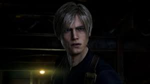
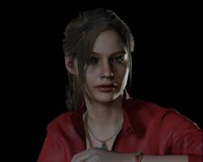
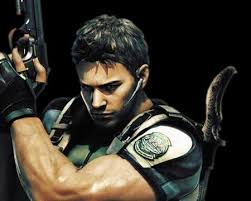
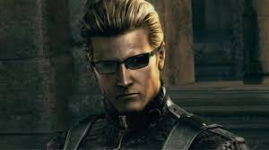
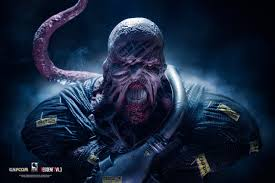
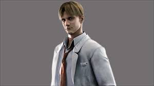
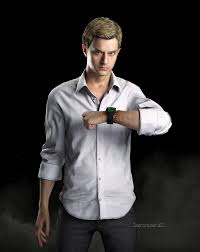

Personajes Icónicos
Conoce a los protagonistas y antagonistas que han marcado la historia de Resident Evil. Desde valientes oficiales hasta científicos locos y criaturas aterradoras.

Leon S. Kennedy
Oficial de Policía / Agente DSO
Protagonista de RE2 y RE4. Un joven oficial que se convirtió en uno de los agentes más capaces contra amenazas bioterroristas.

Claire Redfield
Activista / TerraSave
Hermana de Chris, protagonista de RE2 y Code Veronica. Valiente y determinada, siempre luchando por los inocentes.

Chris Redfield
Miembro fundador de BSAA
Veterano de S.T.A.R.S. y protagonista desde RE1. Especialista en combate y líder nato contra amenazas biológicas.
Jill Valentine
Especialista en desactivación de bombas
Miembro de S.T.A.R.S. y protagonista de RE1 y RE3. Experta en armas y supervivencia urbana.

Albert Wesker
Ex-Capitán S.T.A.R.S. / Traidor
El antagonista principal de la serie. Científico brillante convertido en bioterrorista con poderes sobrehumanos.

Nemesis
Bioarma Tyrant-103
Aterrador perseguidor de RE3. Creado para eliminar a los miembros de S.T.A.R.S. con una inteligencia letal.

Ada Wong
Espía / Agente Independiente
Misteriosa espía con agenda propia. Sus verdaderas lealtades siempre son un enigma.

Dr. William Birkin
Científico de Umbrella / Mutado G
Brillante científico que se transformó en una abominación debido al virus G que él mismo creó.

Ethan Winters
Civil / Protagonista
Hombre común que se ve arrastrado al horror bioterrorista en búsqueda de su esposa en RE7 y RE8.